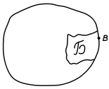

Беседа 3410 от 3877 · Беинса Дуно
Три основни тона
Отче нашъ.
Духътъ Божи.
Всички говорите за правия пѫть, ходите въ него. Бихъ желалъ всѣки единъ да пише за правия пѫть, тъй както той го вижда.
Правиятъ пѫть е пѫть безъ препятствия. Пѫть, който има препятствия – той не е правъ. Пѫтьтъ на свѣтлината, напримѣръ, е правъ. Тя минава и нѣма никакво препятствие. Ако имаше препятствия, щѣше да закѫснѣе. Тя има много малки препятствия. Пѫтьтъ, въ който има много препятствия, не е правъ. Той сега се прави, шосира се. Та по нѣкой пѫть, когато се намѣрите въ затруднение въ вашия пѫть, отклонили сте се въ нѣкоя драка, залостили сте се тамъ и казвате: „Много мѫченъ пѫть“. Пъкъ вие новъ пѫть си правите. Нѣкѫде имате такива понятия, които не сѫ вѣрни. Има много причини – мѫченъ е животътъ. Вози ви земята, казвате: „Мѫчно е да се живѣе на земята“. Че какво е мѫчно да се живѣе на земята? За въздуха не работишъ, за свѣтлината не работишъ, за водата не работишъ, за хлѣба не работишъ. Хлѣбътъ трѣбва да го сдъвчешъ. Голѣма работа, голѣма мѫчнотия е. Че каква работа е, че си сдъвкалъ хлѣба? Казва: „Много мѫчно се яде“. После: „Много мѫчно се добива хлѣба, много мѫчно се живѣе“. И вие си създавате такива изкуствени мѫчнотии, като на кино. Видишъ нѣкой актьоръ, казвашъ: „Страшна работа“. Че каква страшна работа има на киното? Казва: „Война“. Никаква война. Казва: „Гръмотевица, пукотъ, ужасна работа“. Нѣма нищо тамъ. Има нѣща сѫществени, да се освободите отъ личния животъ, отъ живота на дълговетѣ. Имашъ личенъ животъ, казвашъ: „Личность“. Съзнавашъ, че си едно отдѣлно сѫщество, което иска да живѣе щастливо. Имате известни схващания, понятия за себе си. Такива, че трѣбва да минатъ години, за да се убедишъ доколко е вѣрно туй, което мислишъ за себе си. Имашъ на сто души да давашъ, всѣки день ти искатъ. Може да си баща или майка, този човѣкъ като те срещне, казва: „Имашъ да ми давашъ“. – „Че нѣмамъ“. – „Трѣбва да ми дадешъ“. Единъ следъ другъ казватъ: „Да ми дадешъ“. Срещнешъ единъ – давашъ. Срещнешъ другъ – давашъ. Като видишъ тия хора, още отдалече ги познавашъ. Кой е виноватъ сега за туй състояние? Ако бѣше уменъ човѣкъ, хичъ не биха те безпокоили. Ти имашъ една опредѣлена форма, знаятъ те, измѣни формата си, да не те познаватъ. Ако ти си на 35 години, взелъ си пари, ще те знаятъ. Измѣни се и стани на 21 години. Ималъ си брада и мустаци, останешъ безъ мустаци и брада – гладко лице. Ще те срещнатъ и нѣма да те безпокоятъ. Та сега ви казвамъ: Сега не носете опредѣлени лица – ще ви знаятъ всичкитѣ.
Другото положение, че нѣкой пѫть ние искаме да бѫдемъ справедливи. Но въ какво седи справедливостьта? Имаме едно отвлечено понятие, считаме за справедливи нѣща, които намъ ни сѫ приятни. Вие живѣете, но представете си, че онзи, който страда, не сте вие. Той е нѣкой другъ, който страда. Нали сте имали случай да видите, когато единъ акробатъ ходи по вѫжето, пъкъ ти седишъ и треперишъ. Той си играе съ върлината по вѫжето, пъкъ тебе долу ти се свива сърдцето. Казвашъ: „Ще падне, ще се претрепе“. Той върви по вѫжето, клѣка. Ти, като го видишъ да клѣка, казвашъ: „Отиде“. Той се хване съ краката, тебе ти настръхва косата, пъкъ то е майсторъ.
Сега вие всички се плашите отъ сиромашията. Вие настръхвате отъ сиромашията. И мене ме е плашила сиромашията, съ гугла ме е плашила. Единъ смѣлъ, като срещналъ сиромашията съ гуглата, той я взелъ и отъ платното си направилъ риза. Оттамъ-насетне, като си направилъ риза отъ гуглата на сиромашията, тя престанала да го плаши и той забогатѣлъ. Вие искате да бѫдете богати, не искате сиромашията. Една философия, една ясна представа, една максима. Ако ти не можешъ да влѣзешъ въ една кѫща, ти не си свободенъ човѣкъ, не си силенъ човѣкъ. Ако ти не можешъ да излѣзешъ отъ една кѫща, ти не си силенъ човѣкъ. Влизането и излизането, тѣ сѫ две положения, които сѫ необходими. Сега нѣкои отъ васъ влизате и не можете да излѣзете, наполовина сте свободни. Нѣкои излизате и не можете да влѣзете. Пакъ наполовина сте свободни. Сега въ какво седи богатството? Богатството влизане ли е или излизане? Сиромашията влизане ли е или излизане? Кой работи въ свѣта? Богатиятъ работи или сиромахътъ работи? Кой яде – гладниятъ или ситиятъ? Това сѫ състояния вѫтре. После по нѣкой пѫть ние дѣлимъ, казваме: „Той е набоженъ човѣкъ, другиятъ не е набоженъ“. Кой е набоженъ? Който яде, е набоженъ. Който не яде, не е набоженъ. Ами, че отъ безбожницитѣ ставатъ набожници. Всѣки, който е набоженъ, следъ време ще стане безбоженъ. Като се наяде, не иска да яде. Онзи, който е безбоженъ, стане набоженъ. Ние предполагаме, че нѣкои хора въ свѣта сѫ лоши. То е наше понятие сега. Запримѣръ: Ако тонътъ сега въ музиката е дисхармониченъ по отношение на другъ тонъ. Има тонове, които сѫ дисхармонични. Тонътъ, самъ по себе си, не е дисхармониченъ. По отношение на нѣкои други тонове – тѣ не се съгласуватъ, нѣкои акорди не се съгласуватъ. Та казвамъ: Понеже Богъ е построилъ живота по известни гами, щомъ ние се отклонимъ отъ тия гами – страдаме. Всѣки единъ човѣкъ е построенъ по една гама. Тази гама той трѣбва да я измѣни. Въ цѣлокупния животъ ти не вървишъ по една гама, но постепенно всѣки день ще се измѣни гамата. То е за нѣкои, които разбиратъ музиката, не знаятъ какво нѣщо е гама. Музикантитѣ знаятъ, но много малко знаятъ. Една гама може да е минорна, може да е мажорна – то е един методъ за пѣене. Или основниятъ тонъ на една гама е до или може да е ре, може да е ми, може да е фа, може да е соль, може да е си. Ако е до, какво иска да каже съ тази гама? Ако започва съ до, ако е до-мажоръ, какво иска да каже? Въ природата ти си въ една гама на живота, ти си постоянно въ едно вѫтрешно напрежение, искашъ да излѣзешъ отъ едно състояние. Азъ наричамъ това една гама, която излиза отъ до. Напрежението – то е едно яйце, което се мѫти нѣкѫде, турено е подъ квачката, мѫти се 21 день и пилето трѣбва да излѣзе. Щомъ излѣзе пилето – нѣма напрежение. Ти чувашъ гласа на това малкото пиленце. Най-първо пилето си има една майка, която го учи. Като седи, казва: „Клокъ, клокъ“. Англичанитѣ оттамъ взеха думата „клокъ“ (clock). Добре използувай времето – клокъ. Какво казва пилето? Майката казва: „Клокъ“. Пилето не казва „клокъ“, то казва: „Чипъ, чипъ“. На турски значи – „излѣзъ“. Питамъ: Защо пилето казва „чипъ“, а майка му казва „клокъ“? Чипъ – клокъ. Българитѣказватъ: „Клочи – нѣщо, което бъбли“. Майката казва: „Приготви се за работа“. То казва: „Ще излѣза, ще излѣза“, и излиза. Каквото казва пилето и го прави – излиза. Сега вие седите и казвате: „Откѫде го намѣри това нѣщо сега?“ Ще кажете, че е нѣщо много оригинално. Нѣщата вѣрни ли сѫ или не? Вѣренъ тонъ е онзи, съ който въ даденъ случай можешъ да свършишъ дадена работа. Невѣренъ или неправъ тонъ е, съ който не можешъ да свършишъ една работа. Не може да ти помага. Много пѫти васъ ви трѣбватъ пари. Че вие, ако знаехте да пѣете, че можехте да ги имате навсѣкѫде. Въ сегашното общество, ако имахте хубавъ гласъ – веднага 10, 20 лева ще ги имате. Ще се спрешъ нѣкѫде, ще кажешъ: „Да ти попѣя. Трѣбватъ ми 15 лева. Ще ти попѣя една пѣсень. Обичашъ ли?“ Изпѣешъ – не 15, но 25 изведнажъ ще ти дадатъ. Ида при единъ боленъ човѣкъ, зная известни музикални формули, на васъ нѣма да ви ги кажа, то е престѫпление, сами ще ги намѣрите. Като изпѣешъ тази формула, веднага човѣкъ става здравъ. Но въ живота не е най-важното паритѣ. Тѣ сѫ едно срѣдство. Въ живота най-важното е човѣкъ да има свѣтлина. Второто важно нѣщо е да има топлина. И третото важно нѣщо е да има сила. Свѣтлината ще я поставишъ горе въ ума си. Топлината ще я поставишъ въ сърдцето си. Топлината и тя дава онзи ритъмъ на движението. Сърдцето показва топлината и онзи ритъмъ на топлината. Докато той е правиленъ, животътъ върви. Силата е туй, което е въ връзка съ цѣлото тѣло. Тя дава възможность да ходишъ, да работишъ. То е сила. Умътъ е, който дава начинъ какъ да се справишъ съ всичкитѣ мѫчнотии. Сега, като ви говоря, вие казвате, че туй нѣщо го знаете. Какво нѣщо е знанието? Когато майката те ражда, дава ли ти нѣкакво знание? Майката ти дава възможность, но майка ти, като те роди – трѣбва да идешъ на училище, да се учишъ отъ нѣкой учитель. Майката иска да знаешъ, да придобиешъ туй знание. Но възможноститѣ сѫ въ тебе. Майка ти нѣма време да те учи. Едно дете много мѫчно се учи отъ майка си, едно дете много мѫчно се учи отъ баща си. За да се учи детето, бащата трѣбва да го прати отвънъ, други да го учатъ. Кой ще го учи? Вие не може да се учите, ако нѣмате въ сѫщность свѣтлина въ ума си и, ако нѣмате топлина въ сърдцето си и, ако нѣмате сила въ тѣлото си – вие не може да се учите. Възможно е човѣкъ безъ свѣтлина да живѣе, възможно е безъ топлина да живѣе, но то е обикновено положение. Има единъ животъ извънъ свѣтлината, има единъ животъ извънъ топлината, извънъ силата. Ние не го знаемъ какъвъ е. Има, сѫществува – тѣ сѫ теории, предположения. Вие въ сегашния животъ имате идеята, създадена отъ хиляди години, че нѣма нѣщо по-лошо отъ сегашния животъ. Всички индуси работятъ да се освободятъ отъ живота. Какъвъ ще бѫде онзи животъ, въ който тѣ искатъ да влѣзатъ? Казватъ: „Другъ животъ, животъ на Давакана“. Питамъ: Кѫде е Давакана? Кѫде е правилниятъ тонъ? За да намѣря единъ правиленъ тонъ, на колко километра далече да го намѣря? Въ мене е тонътъ, въ мене е възможностьта да създамъ този тонъ. Правилниятъ, хубавъ, мекъ, силенъ тонъ – то е въ мене. Той е въ мене, въ главата ми, мѣстото съ милиметри не може да се мѣри.
Изобщо мнозина отъ васъ не искате да пѣете. Но пѣенето е първиятъ потикъ. Човѣкъ, който не пѣе – той е далече отъ любовьта. Човѣкъ, който пѣе – той е близо до любовьта. Всички онѣзи, на които имъ се продължи живота, ставатъ весели, позапѣятъ. Когато човѣкъ престане да пѣе, то е болезнено състояние. Той е вдаденъ въ нѣкоя дълбока мисъль. Но и въ една дълбока мисъль има пѣене. Всѣка мисъль, която е вѣрна, произвожда състояние, въ което човѣкъ се радва. Когато човѣкъ разреши една мѫчна задача, въ него се образува една вѫтрешна радость, че неговото лице просиява. Сега, въ каквото и общество да сте, хората се чоплятъ постоянно едни-други. Искатъ да знаятъ кой е по-красивъ, кой е по-силенъ, по-уменъ. То сѫ външни състояния на човѣка. Кой е по-уменъ човѣкъ? Ако азъ изпѣя при една плоча, тази плоча е много умна. Като изпѣя една пѣсень, тази плоча следъ 15–20 минути и тя пѣе като мене. Тази плоча, която се върти и пѣе, съзнава ли пѣенето? Ако ѝ кажа да изпѣе нѣкоя друга пѣсень, тя ще каже: „Азъ пѣя само това, което ми преподали. Днешната пѣсень, която ми преподадоха – нея пѣя. Друга пѣсень не пѣя“. Казвашъ: „Азъ ходя само по този пѫть“. Като ходишъ само по този пѫть, ти си въ положението на една грамофонна плоча. Ще разбирате този пѫть. Въ този пѫть, въ който ходишъ, има вече разнообразие. Днешниятъ пѫть, въ който ходя, втори пѫть нѣма да го мина. Той ще се различава. Пѫтьтъ, който утре ще мина, и той се различава. Всѣки день пѫтьтъ, който изминавамъ, той се различава. Ти този пѫть не го знаешъ, сега го учишъ. Пѫтьтъ въ живота, който сега минаваме – сега го учимъ. Ние мислимъ, че знаемъ пѫтя. Казва: „Азъ го зная този пѫть. Пѫтя за Бога го зная“. То е тъй – да вземешъ една карта и да кажешъ: „Това е България“. И ще кажешъ: „Тукъ е Варна“. Казвашъ: „Зная този пѫть на картата“. Но я тръгни да ходишъ въ действителность, знаешъ ли го? Казвашъ, че на картата го знаешъ, казвашъ откѫде се минава за Варна, тръгни самъ да видишъ какъ се ходи оттукъ до Варна. Може и на картата да видишъ пѫтя оттукъ до Америка, но я тръгни да видишъ какъ се отива. Вѣрна ли е тази карта, тази крива линия?

Трѣбва да станемъ свободни въ своята мисъль. Нѣщата могатъ да се разбиратъ отъ много гледища. Една пѣсень може да я пѣя по много начини. Но въ дадения случай има единъ правиленъ начинъ. Имашъ свобода да измѣнишъ нѣщата. Щомъ влѣза въ една система, напримѣръ сега музиката се изучава споредъ начини, както сега се развива, както сега се образуватъ гамитѣ, както е наредена музиката. Ако идешъ да свиришъ на единъ органъ – ще свиришъ, както е нареденъ. Какъ сѫ наредени клавишитѣ? Като знае – ще знае какъ да свири. Но въ свиренето всичкитѣ нѣща иматъ полза. Човѣкъ да пѣе и да свири, той съ музиката внася свѣтлина въ ума си, и съ музиката той внася известна специфична топлина, и съ музиката внася известна сила въ организма си. Всички ония хора, които сѫ музикални, характеритѣ имъ сѫ съзнателни. Човѣкъ, който е музикаленъ, самъ познава погрѣшката си, казва: „Извинете“. Онзи, който не е музикаленъ, нѣма да ги познае. Има една аналогия, че въ музиката ти виждашъ погрѣшката си. Казва: „Не е тази погрѣшка много голѣма“. Голѣмитѣ погрѣшки и малкитѣ, тѣ се различаватъ. Но имате сѫщото: имате малъкъ огънь, (който) и голѣмъ може да стане, и голѣмиятъ огънь малъкъ може да стане. То е отношение. Една погрѣшка е малка, микроскопическа. Може да струва една стотинка, но ако оставишъ тази погрѣшка съ години, тя ще стане голѣма. Единъ математикъ изчислява, че ако 25 стотинки въ времето на Христа се дадатъ подъ сложна лихва, то се получава едно грамадно число следъ 2000 години отъ тия 25 стотинки. Той казва, че ако цѣлата земя е злато, нѣма да може да изплати дълга. То е една малка добродетель въ тебе, ако ти я развивашъ, следъ 2000 години ще стане грамадна. Законътъ е сѫщъ и за доброто и за злото. На малкото, ако ти дадешъ условия, следъ време то става мощно. Казвате: „Какво като съмъ добъръ?“ Следъ 2000 години ще бѫдешъ толкова богатъ, че нѣма да има като тебъ втори толкова богатъ. Този математикъ не се спира само на това, но той отива по-далечъ. Азъ не съмъ провѣрявалъ доколко сѫ вѣрни неговитѣ изчисления, но той казва, че ако всѣки 5 минути падатъ въ една банка по една земя, като нашата, злато – то трѣбвало 9000 години да пада на всѣки 5 минути, за да си изплати дълга.
Та азъ вземамъ другата страна: Дайте възможность, не спъвайте себе си. Вие седите и казвате: „Нѣма да я бѫде тази работа. Ние не вървимъ по правия пѫть. На зло отиваме ние. Нѣма хора“. Какъ нѣма хора? Два милиарда хора има. Хора има. Оставете хората настрани, но всѣки единъ въ себе си да каже: „За какво съмъ дошълъ азъ на земята“.
Всички се оплакваме, че нѣкой ни обижда. Че ако ни обижда, ако една вода се размѫща, какво лошо има? Реката Нилъ, нали като се размѫти, носи всичкитѣ богатства. Най-богато мѣсто за пшеница е областьта на реката Нилъ, кѫдето се образува най-хубавото жито, най-хубавитѣ класове, които даватъ по 260 зърна. Сега ние казваме: „Лошъ е животътъ. Хората не сѫ добри“. То е пресилена работа. То е наполовина вѣрно. Направи една погрѣшка, не взелъ фа вѣрно. Казва: „Не пѣе хубаво“. Казвамъ: Направилъ една малка погрѣшка, не взелъ фа или ми вѣрно. Нѣкой ми не може да вземе вѣрно, нѣкой фа не може да вземе вѣрно, нѣкой ре не може да вземе вѣрно. Сега нѣкой, който се учи да ходи дълго време, трѣбва да ходи, за да се научи какъ да вземе ре. Нѣкой пѫть може да направимъ единъ опитъ, да пуснемъ 10 души да ходятъ и да познаемъ по хода (имъ) може ли да взематъ вѣрно ре или не. Като тръгне, още по движението азъ може да зная може ли да взема фа или не. Единъ човѣкъ, който обича парицитѣ, единъ човѣкъ, който обича винцето, единъ човѣкъ, който обича яденето – фа го взема много добре. Когато обича винцето – фа го взема много добре. Когато обича ракийцата – фа взема много вѣрно. Който обича хлѣбеца – фа взема много вѣрно. Всѣки човѣкъ, който обича нѣщо материално, той фа взема вѣрно. Това е твърдение. Нѣкой ще каже: „Докажи“. Нѣщата трѣбва да се докажатъ само не на теория, но научно. Кои нѣща сѫ научни. Научни нѣща сѫ онази истина, която сега изучаваме. Изучавате гамитѣ – това е наука. Ще изучавате положението на гамитѣ, какво отношение иматъ, строежа въ създаването на една пѣсень, въ създаването на една музикална пиеса или въ създаването на една симфония. Или има хора, които съ години работятъ въ музиката. Сега, като говоря, не искамъ да ви кажа, че трѣбва да станете гениални музиканти. Понеже музиката има хиляди години да я изучавате. Да допуснемъ сега, това е единъ анекдотъ. Въ какво седи анекдотътъ? Може да е вѣренъ, може да не е вѣренъ. Всичкитѣ анекдоти сѫ нѣщо украсено. Нѣщата въ единъ анекдотъ не сѫ поставени тъй, както въ сѫщность (сѫ), но има нѣщо украсено въ тѣхъ. Запримѣръ: Анекдотъ има за жената на Сократа, че била много сприхава, много лоша. Каква била тя, има много анекдоти. Но пъкъ и Сократъ не билъ стока. Той има толкозъ дефекти въ себе си, понеже тя, като гъркиня, е много взискателна. Ксантипа обичала красивото, изящното, обичала порядъчния животъ, който Сократъ не обичалъ. Като се гледа черепа на Сократа, черепътъ (му) е много правиленъ, но въ строежа на неговия носъ има нѣщо. Тя е трѣбвало да го възпитава, като нѣкое малко дете. Благодарение на Ксантипа, той стана Сократъ. Тѣ турили единъ анекдотъ. Той казва така, азъ ще го преведа. Питали го защо се оженилъ за нея. Той казва, че се оженилъ за нея да види, ако може да търпи несгодитѣ на тази Ксантипа, на тази изящна жена, ако на нея може да угоди. Тогава животътъ му ще стане веселъ. Казватъ, че била много лоша. Въ какво седи лошото? Единъ день той довелъ единъ приятель въ кѫщи. Тя носи единъ легенъ, обаче следъ като полѣла да си измиятъ рѫцетѣ, Сократъ направилъ една погрѣшка. Тя взела легена и го излѣла на двамата на главитѣ имъ. Онзи, който създалъ анекдота, казва, че тя имъ давала наставление. Сократъ не знаелъ какъ да си тури краката. Тя казва: „Събери си краката“, казва и на неговиятъ приятель: „Събери си краката“. Сократъ казва: „Ти трѣбва да знаешъ, че следъ тия наставления ще дойде дъждъ отгоре“. Сега вие, като се разгнѣвите, току изведнажъ дигнете рѫката си и ударите нѣщо, счупите го. Сега, защо трѣбва да ударишъ този предметъ и да счупишъ? Музикално азъ го намирамъ много естествено. Онзи музикантъ, който извади своя камертонъ, удари го. Ти ударишъ чашата. Тази чаша какво казва? Ако е отъ стъкло, което пружинира? Ударишъ чашата и тя отскочи. Даде тона до, после ре, ми. Сега казвашъ: „Да търпишъ“. Нѣкой казалъ: „Да изтърпишъ една жена е по-голѣмо (изпитание), отколкото да изтърпишъ всичкитѣ мѫчнотии въ свѣта“. Сега онѣзи отъ васъ, които сте женени, го знаете. Нѣкой пѫть може да държите на лицето, но обективно, отъ опитностьта, която имате. Лошото въ хлѣба, кѫде е? Най-хубавиятъ хлѣбъ може да имате и да останете недоволни отъ хлѣба, понеже ако горчи този хлѣбъ или яденето, което много хубаво е сготвено, ако не чакате да изстине – туй ядене ще причини вреда. И най-хубавото нѣщо не трѣбва да бързаме изведнажъ да го изѣдемъ.
Вие всички имате желанието да бѫдете щастливи. То щѣше да бѫде най-голѣмото нещастие. Въ какво седи щастието на човѣка? Щастието на човѣка, то е единъ моментъ. Падамъ въ реката, давя се, дойде единъ човѣкъ, извади ме. Въ дадения случай виждамъ, че щѣхъ да изгубя живота. Избави ме този човѣкъ и къмъ него се заражда едно хубаво чувство на благодарность. Виждамъ Божествениятъ промисъль – турило единъ уменъ човѣкъ да ми помогне. Благодаря на Бога, благодаря и на този човѣкъ въ дадения случай. Накѫдето (и) да ходя, може да се яви неразположение. Допуснете, че съмъ се докачилъ нѣкѫде, влѣза въ водата да се давя, започна да се давя и виждамъ, че не е хубаво, но нѣма кой да ме извади. Изважда ме този човѣкъ и въ мене се явява едно съзнание. Благодаря на този човѣкъ, че е дошълъ да ме избави. Казвамъ: Да се дави човѣкъ въ водата (е) по-лошо, отколкото да страда отвънъ. Та казвамъ: Хубавитѣ условия въ живота трѣбва да ги използуваме. Сега при всичкитѣ лоши състояния, които имаме, все има нѣкоя хубава мисъль, която седи край брѣга. Седишъ и мислишъ. Нѣкой пѫть ти минава една мисъль и казва: „Погледна ме малко другояче Богъ, Който създалъ свѣта, промислилъ всичко, заради тебе“. Ти не виждашъ благото, което Богъ е създалъ. Гледамъ – нѣма нито едно нещастие. Имате толкозъ блага, които Богъ ви е далъ и азъ се чудя, че не ги виждате. Само да бутнешъ едно копче и всичко ще имате на разположение. Въ банката имате вложени доста пари, богати сте, а като сиромаси ходите. Хубави дрехи имате – въ съдрани ходите, не ги знаете. Носите скѫсани обуща, а имате хубави – и тѣхъ не ги знаете. Пиано имате – не го знаете кѫде е. Ходите и казвате: „Какво да правимъ?“ Вземате единъ лотариенъ билетъ, (за) да ви се падне единъ милионъ. Милиони вие имате въ банката, казвате: „Кѫде сѫ?“ Едни тукъ се усмихватъ, други сѫ много сериозни. Представете си една отлична картина на нѣкой художникъ, усмихне се. Азъ зная една усмивка какво означава. (Нѣкой) казва: „Вижъ какъвъ билъ“. Нѣкой казва: „Азъ мислѣхъ, че може да пѣя“. Но като мисля, виждамъ, че той трѣбва да пѣе. Нѣкой седи и мисли, че може да пѣе. Ти самъ като си – попѣѝ на себе си най-първо. Пѣйте на себе си първо. Вие пѣете на другитѣ. Пѣйте на себе си. Вие сутринь като станете – попѣйте на Господа. Господь казва: „Я да видимъ какво си научилъ по музика“. Вие станете сутриньта и сте недоволни, камертонътъ не е вѣренъ, не си взелъ единъ вѣренъ тонъ. Какъвъ тонъ вземате сутринь като станете? Сега казвате: „Стани, бре“. Единъ ми казва какъ казвалъ на себе си. Казва: „Иванчо, стани бе“. Самъ на себе си казва това: „Стани, бе, Иванчо, Иванчо“. После казва: „Бре, Иванчо, не ставашъ. Стани, бе“. Пакъ лежи. – „Стани, бе, Иванчо“.
Сега нѣкой пѫть вие мислите, че сте нѣщо въ свѣта, че сте нѣщо. Тъй е. Че имате дарби – тъй е. Всички ние страдаме, че нашитѣ дарби не сѫ проявени. Ние искаме да се проявимъ предъ хора невежи. Какво ще покажемъ – чудна работа? Тия лампи, които свѣтятъ, сами се показватъ. Ти си цвѣтъ, който живѣе. Като цвѣтъ, казвашъ: „Елате да помиришите“. Като помиришешъ, знаешъ, че този цвѣтъ е цъвналъ. Казва: „Не трѣбва да има илюзии“. Казва: „Трѣбва да бѫда добъръ човѣкъ“. Трѣбва да живѣешъ като цвѣтъ. Ти си музикантъ – трѣбва да проявишъ музиката. Ти си добъръ човѣкъ – трѣбва да проявишъ доброто. Доброто дава основнитѣ тонове – до, ми, соль – доброта, справедливость и разумность. Това сѫ основнитѣ тонове. Въ соль нѣщата цъвтятъ, въ ми нѣщата взематъ посока. Единъ художникъ, за да нарисува една картина, трѣбва да разбира какво нѣщо е ми. За да може да рисува, трѣбва да има хубаво платно, не може да рисува на каквото и да е платно. На морскиятъ брѣгъ, ако нарисува – ще дойдатъ вълнитѣ и ще го заличатъ. Трѣбва да има хубаво платно. Сега влизамъ въ положението, развивамъ една философия. Казвамъ: Пѣйте добре. Но комуто и да кажа отъ васъ, се стѣснява. Нѣкой пѫть азъ може да пѣя. Казвамъ си: Какво ще имъ пѣя? Тѣ не разбиратъ отъ тази музика. Казвамъ: До е напрежение, не го виждате какво напрежение може да има въ единъ тонъ. Ако вземешъ вѣрно тона до, имашъ една болка, която те стѣснява. Изпѣешъ тона до и болката мине. Пѣѝ на крака си /Учительтъ пѣе: „Боли ме крака, боли ме крака, боли ме крака, боли, боли, боли, боли, боли ме крака“/. Изкуство е това. Азъ пѣя, но мене кракътъ не ме боли. Ще търпишъ, ще пѣешъ и кракътъ ще престане (да те боли). Ще смѣнишъ своето състояние. Трептенията се смѣниха, влизашъ въ хармония. Болкитѣ на крака показватъ, че сме влѣзли въ дисхармония съ нѣкого отъ висшитѣ свѣтове. Казватъ: „Основата ти не е правилна“. Измѣни камертона. Ела въ съгласие съ Великия Законъ и ти ще пѣешъ. Сега изпѣйте ми вие. Трудна работа. Азъ пѣя тъй хубаво, защото не съмъ боленъ. Но ви казвамъ: Когато ви боли крака, какъ трѣбва да пѣете? Болестьта въ свѣта е едно условие. Най-първо създайте си въ ума една мисъль, че Богъ е приготвилъ неизчерпаеми условия за васъ. Вие седите и сте недоволни за нищо и никакво. Да бѫдешъ благодаренъ, така да бѫде погълната мисъльта, че цѣлиятъ свѣтъ представя възможность за твоето подигане. Нѣма какво да се безпокоишъ. Че дошло безпокойството – ти се радвай на това. Отиваме на екскурзия. Казватъ: „Вали“. Казвамъ: Вали, не вали – ще вървимъ. Тръгнахме, тѣ мислятъ, че азъ като отивамъ, ще престане. Мислятъ, че азъ ще кажа на дъжда да престане. Казвамъ: То едва е започнало. Вървимъ, и дъждъ – и отвънъ и отвѫтре. Трѣбва да ни умие главитѣ, краката. Всички казватъ: „Защо е този дъждъ?“ Казватъ: „Неблагоприятни условия“. Но всички, които минаха презъ неблагоприятнитѣ условия, се чувствуваха добре. После, дъждътъ бѣше пъленъ съ магнетическа енергия, която като пада дъждътъ, все ще остане въ насъ. Ние имаме криво понятие. Дъждътъ може да развали фасона на дрехата. Чорапитѣ ми бѣха бѣли, станаха черни отъ каль. Обущата ми се оцапаха, до колѣне мокри, и външнитѣ гащи мокри, и вѫтрешнитѣ мокри. Вали дъждъ, трѣбва да се преоблѣка, какво ще правимъ? Казватъ: „Днесъ ли намѣри да идешъ на екскурзия?“ Казвамъ: Днесъ тамънъ е при най-лошитѣ условия на живота. Благодарете на Бога. Всички имате добро желание. Сега мога да ви кажа, че отъ васъ по-добри хора нѣма. Ще кажете, че е подигравка. Нѣма по-добри хора отъ васъ. Че не сте добри – то е другъ въпросъ. То е ваше схващане сега. Не мога да кажа, че сте лоши, понеже по-добри хора нѣма. Даровити сте, но не използувате вашата даровитость. Имате добродетели. Нѣкои ваши приятели мислятъ, че сте добри, нѣкои не мислятъ – две мнения има. Две мнения сѫ необходими. Когато нѣкои наши приятели мислятъ, че сме добри и когато нѣкои мислятъ, че сѫ лоши – много добре мислятъ. При доброто сме свободни, и при злото сме свободни. Щомъ сме лоши – проявяваме се, както разбираме. Щомъ съмъ добъръ – то е ваше схващане. Казва: „Като баба нѣма да бѫдешъ, ще се проявишъ, трѣбва да се уважаватъ хората“. Другиятъ казва: „Меко постѫпи“. Вода си. Като падне нѣщо въ водата, казва: „Заповѣдайте“. Отвори мѣсто да влѣзе. Пъкъ, ако сте нѣкоя канара, че хвърлятъ камъкъ (по нея), тя казва: „Навънъ отскочи“. Тогава кой е правъ? И водата е права, и канарата е права. Нѣкой пѫть разсѫждаваме. Нѣкои хора сѫ като водата – пущатъ, но затварятъ. Другитѣ не те пущатъ, отскачатъ. Казватъ: „Навънъ работи“. Като влѣзешъ вѫтре, не можешъ да излѣзешъ. Канарата казва: „Навънъ“. Водата казва: „Влѣзъ, ще те науча. Ти мислишъ, че азъ съмъ отъ мекитѣ. Като влѣзешъ въ мене, азъ ще те тъпча. Най-първо ти ще ме тъпчешъ, после азъ ще те тъпча“. Канарата те отхвърля, казва: „Азъ искамъ да останешъ свободенъ“. Онѣзи, които насъ ни гонятъ, искатъ нашата свобода. Да не ни тъпчатъ. Онѣзи, които не ни гонятъ, тѣ отгоре ще ни тъпчатъ. Ще си изберешъ на канара ли да паднешъ или въ водата ще влѣзешъ. Ще изберешъ единия или другия. Пъкъ единъ день водата, като изтече, ще отвори мѣсто. Пакъ ще останешъ свободенъ. Тя е щедра. Тя ще те остави наследникъ. Сега тя, като напусне това мѣсто, като замине, камънитѣ ги оставя наследници. Следователно всичката опитность, която придобиваме въ водата или върху камънитѣ, тази опитность остава. То е богатството, което остава. Следователно – всички преживявания, които имаме въ свѣта, от каквато и форма да сѫ, тѣ сѫ едно богатство. Стихътъ казва: „Всичко онова, което се случи на онѣзи, които любятъ Бога, то ще се превърне за добро“. Значи, каквото и да се случи на човѣка, ще се превърне на добро. Щомъ е добро, то е богатство, което ще занесешъ съ себе си. То влиза като строежъ въ твоя умъ, въ твоето сърдце и твоето тѣло. Трѣбва да благодаримъ за онова, което става. Не трѣбва да остава въ насъ едно понятие, че сме нещастни. Ще благодаришъ, че нещастието те е засегнало малко съ крачето си и щастието съ малкото краче ще те засегне. Ще благодаришъ въ себе си за всѣко нѣщо, което ви се случва, защото Богъ е, Който примирява противоречията въ насъ. Ние ще ги опитаме, Той ще ги примири. Ние ще констатираме само факта. Любовьта е единственото нѣщо, любовьта ще дойде последна. Когато съберемъ всички данни и факти, най-противоположни въ насъ, тя ще примири всичкитѣ и ще изкара най-хубавото, което нѣкога сте мислили. Тя ще го събере и тогава ние ще живѣемъ въ това, събраното.
Това е животъ вѣченъ да позная Тебе Единнаго Истиннаго Бога и Христа, Когото Ти Си пратилъ.
ХХ година
36. Лекция на Общия Окултенъ класъ
18 юний, 1941 год., Срѣда, 5 ч.с.
Изгрѣвъ – София